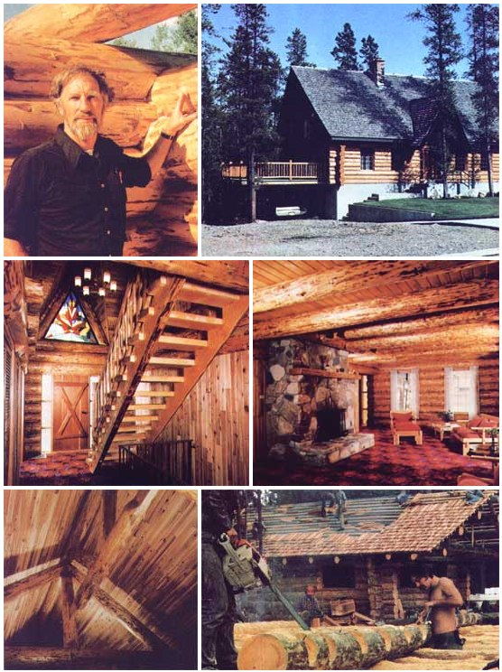
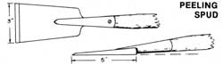
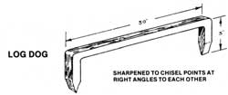
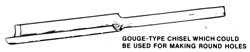

From Building With Logs by B. Allan Mackie, copyright Canada, 1977, by B. Allan Mackie and Ida Mary Mackie. Prince George, B.C., and reprinted with the author's permission. Available in hard cover ($17.50) or paperback ($10.00) from the authoripublisher, and-in paperback only ($10.00 plus 75c shipping and handling)-from Mother's Bookshelf.
Up in Prince George, British Columbia, there's a man who believes solid timber construction to be one of the strongest, most durable, and most beautiful of all building forms ... and that man has made the teaching of log construction skills his lifework.
According to B. Allan Mackie, log construction is one of the very few contemporary methods of building that enable an individual to exchange his or her own labor and ingenuity-rather than cash or a mortgage debt-for a home that he or she can be proud of.
"Building with logs does require hard work,"Allan admits, "but it's pleasant and healthful work ... and not at all beyond the strength of most families."
In 1971, as a college teacher, Allan wrote and (with his wife, Mary) published a working textbook called Building With Logs. The manual received such a favorable response that it's now in its sixth printing. As a direct result of that warm reception for what he had to say, Allan resigned from his teaching position in 1974 to found the B. Allan Mackie School of Log Building-a registered trade school and a non-profit society-which he describes as a "forest workshop", 26 miles from the city of Prince George.
Though the school's intensive nine-week program of studies (at $100 per week) is primarily intended for "those men and women who will follow a career as professional log builders and teachers of log building", folks who are only planning to construct their own one-house-in-alifetime are welcome too, as space allows. The school also offers privately organized oneweek courses in Canada and the United States (each of these one-week courses can accommodate 15 active students at $100 each and a number of $20-tuition class observers).
"I recommend this route to anyone in search of log builder training," says Allan. "Gather together a group of 15 students, some logs, and a worksite, and send me an invitation. " We warn you, however: Allan Mackie, is not only a professional but a purist. Don't even think about enrolling in one of his courses unless you're serious about learning high-quality log construction techniques.
If such perfectionism is for you, though, write to:
B. Allan Mackie School of Log Building
P.O. Box 1205, Dept. TMEN
Prince George, B.C.
Canada V2L 4 V3
for the school's 1978 schedule and enclose $1.00 for postage, plus a self-addressed envelope. A list of the Mackies' publications can be obtained by directing a request to the same address.
The following material, excerpted from Building With Logs, should give you an idea of some of the information a beginning log builder needs. Of course, it's only a small portion of the instruction provided in Allan Mackie's books ... and only a tiny part of the knowledge that you can gain by direct participation in one of the author's courses.
It's impossible to imagine a more flexible, wide-ranging, or independent line of work than solid timber construction ... for once the builder has created an admirable log house, his name belongs to that project and he becomes known by it. Requests for his work will follow him as surely as night follows day, so he never need worry about where his next job is coming from. The log builder can set his own timetable so as to be free when he needs to be. Best of all, when he works he's not merely a cog in a corporate machine plodding mindlessly toward a more polluted planet. Instead, the log builder creates with his own hands a tremendous work of art, a thing of great value, in a conservationist's way. These satisfactions are rewards in themselves ... but the money isn't bad either.
With real estate prices changing so swiftly, it's difficult to estimate what an efficiently organized log builder can expect to earn , but-on a comparison basis-it's easier: With log homes selling well ahead of standard frame construction and usually at a much higher price, the builder can properly expect to be paid accordingly. Remember that the fabrication of log homes is labour-intensive, too, so that a greater proportion of the selling price goes directly to the workmen. This is another reason why the supply of log builders has not begun to keep up with the widespread demand. My own experience is that there are thou sands of would-be home buyers searching for either a builder or a log house. So-as a trade-the log builder profession is one of the most secure, rewarding, and respected ones to be found in modern society.
The tie hackers and shake splitters who moved into the bush to work not so very many years ago were said to have had their sawmills on their backs. This was true, inasmuch as they could build their own accommodation for the winter with the tools they could carry: a double-bitted axe, a broadaxe, a crosscut saw or frame saw, and an auger bit (the handle to be made in the woods), plus a piece of sheet metal for the stove and a small packet of shingle nails. This, along with a bedroll and a few days' supply of groceries, set a man up in business.
Conditions in the woods have changed greatly ... for loggers. But for the lone woodsman, the basic tools-with the exception of the power sawhave changed little. Because your building will be larger and of a more permanent nature than those earlier ones, there is need for a somewhat expanded list of tools. The most important of these, in addition to a basic set of carpenter's tools, are a log scriber, a peeling spud, and a pair of log dogs.
The tool that can do the most for you is a power saw, and-in spite of the fact that it is noisy, smoky, and dangerous-it must be recommended for its speed and tremendous versatility. I don't really favour one brand of power saw above another, because almost any saw gives good service if it is looked after correctly. But in general a very big saw is too dangerous to handle in high or awkward places on a building, and the itty-bitty saws developed for cheechakos (in the Pacific Northwest: greenhorns, tenderfeet) are, in spite of the manufacturers' claims, good for nothing. Use a moderate sized saw of 4- to 4.5-cubic-inch displacement, with a relatively high cutting speed and a bar length of 16 to 20 inches. The shorter bar is good for working on the building but the longer bar is needed for felling trees. Some saws have a high noise characteristic and, out of respect for your eardrums, should be avoided. I recommend, as protection against the noise and against sawdust flying into the eyes, the wearing of a crash helmet with full plastic screen across the face.
To look after a power saw, observe two rules: Mix the gas and oil properly and keep the chain sharp, properly tensioned, and well oiled. Most power saws require a 16 to one mix (16 parts gas to one part oil), mixed by measuring three gallons of gas into a five-gallon can, then pouring one quart of oil into one gallon of gas in a separate can, then stirring and shaking this mixture until the oil is well suspended before it is added to the previous three gallons, making a total of four gallons of mix, If all the oil wasn't mixed, pour a little back into the smaller can and stir again. When pouring this into the gas tank of the saw, use a strainer funnel. The chain filing and tensioning is best done according to the manufacturer's directions for each saw. The thing is to do it faithfully.
Axes are, to a large extent, a matter of personal preference. I use 33/4-lb. double-bitted axes because I like them. One has the helve cut off to 16 inches and the other is the full 36 inches but shaved down until it's limber enough to ease the shock of impact on timber. Many people prefer a single-bitted axe because it's safer. A heavy axe head (4 to 4-1/4 lbs.) with a very short handle is most useful for notching.
Axes should be kept sharp. File into the bit, "cutting" the file with the axe. A good handle on the file prevents cuts if the file slips. Start filing a distance back from the edge and work outward. This will keep the blade slim and parabolic in shape. Too thin an edge will chip or bend, but an axe must be sharp, since a dull axe can slip or glance off the wood.
The owner of a good two-inch auger is lucky, for this is not an easy tool to find. The only care it needs is protection of the edges from gravel, dirt, or nails. Grease it well before storage to prevent rust. In use, a hand auger should not be expected to bore through more than one log at a time. Unless it's very long, it will jam up with chips and, once taken out of the cut, it's hard to start again. Bridge augers will drill deeper, particularly if power driven. Holes may also be cut with a gouge type of chisel. This chisel has a long curved blade and is sharpened on the inside. It should have a heavy shank so it may be driven with a hammer. I first saw this type of drill in a museum. Nowadays, as in the 1800's, this tool would have to be made by a blacksmith.
A pair of good scribers is essential, for these are the key to measuring for perfectly fitted logs. Their helpfulness cannot be overestimated. Many types and designs of scribers have been made, generally by the person who expects to use them. Mine were made from an old power saw blade. Scribers can also be made from a heavy pair of machinist's or tinsmith's dividers ... they should be strong enough to be able to cut a good clear line in the log. But they must also be handy enough to fit close to the log on the corners. They should provide a way to set the distance between the points firmly, without danger of slipping. "Fin" type scribers can be made by a blacksmith, and very good ones of this kind can be made from a No. 4 coyote trap (which has the added advantage of keeping the trap from being any further danger to coyotes). Cut the eyes of the spring through at right angles to the spring so that they have a fishtail cutting edge. Heat and squeeze the spring to a sharper bend and put a keeper around it. In use, the cutting points are set at the desired distance with a small block of wood and then the keeper is driven up tightly. For additional help in creating scribers and other tools, I recommend the book written by an industrial education teacher and former student of mine. It's called Log Building Tools and How to Make Them, by Ray Arcand. (From R-J Enterprises, Box 132, Sorrento, B.C., Canada VOE 2WO.)
A broadaxe is necessary if any hewing is to be done, such as in preparing the upper surfaces of joists and beams to receive flooring. As the name says, a broadaxe is one with a very wide cutting edge. The face side is flat and the tool is sharpened from the other side only ... something like a chisel. Nothing but a broadaxe will make the straight-faced cut for a relatively even surface. I'm building a piece-enpiece addition to my own home at the time of this writing, and all the members are hewn on four sides, for the framing. It's pleasant work which I do in easy stages on evenings and weekends. One day, in a hurry, I used the power saw and was surprised to find the finished member less exact than the logs which had been broadaxed. Furthermore, the surfaces were rough, whereas broadaxed surfaces are quite slick. These fine axes are very difficult to obtain, but a good blacksmith could make one. When buying or ordering a broadaxe, however, remember that the weight of it means everything.
It must be not less than eight lbs., preferably 10 to 12; anything lighter than this is more properly called a "bench axe" and is incapable of hewing logs.
A chalk line is another necessary device for many jobs, including hewing. The type that reels back into a closed container filled with powdered, coloured chalk is good and can be obtained at any good hardware store.
An adze or lip adze can be a useful tool but also a very dangerous one. Some expert builders use quite a variety of shorthandled adzes and axes. They can be handy but are not strictly necessary.
The builder will also need a peavey or cant hook to move logs, 200 to 300 feet of 3/4-inch polypropylene rope, and a single shive snatch block.
The above-listed tools are sufficient to construct a log building, but I would like to mention a power saw attachment which enables an individual to saw lumber. This is something to look into, not simply because of the high prices of lumber but also because of its frequently being of such poor quality. There may be log ends which could readily become excellent lumber. If you live in a region where poplar and birch grow and are considered virtual weeds, you can make excellent finish lumber of them. Don't worry too much about making arbitrary commercial measurements such as 2 X 4 or 2 X 10 ... I find it a most welcome relief to see a good piece of wood that doesn't come off the usual assembly line of shapes. It's best to consult with your local saw shop to see what they can provide for your particular make of saw.
A leisurely schedule might go this way, starting each spring as early as climatic conditions will allow. Year 1: site preparation, basement, draintile, septic tank installations, and possibly the first round of logs with floor joists in place. After freeze-up or in mid-winter, fell the trees, skid them out cleanly on the snow, and transport them to the building site before load restrictions are imposed on the roads. Year 2: the logwork up to the point of having the root on and fully weatherproof. Interior finishing may proceed all through the winter. Year 3: getting it all together, building the fireplace, pouring the driveways and sidewalks, installing the plumbing and electrical fixtures, the furnace, the floor coverings. And, before freeze-up, moving into a completely finished house.
This schedule might recommend itself to those who must build in their spare time. Certainly, the building of a log house need not take such a long time. I have built the logwork in a 30 X 40 residence in a weekend, with the help of a very good man and a crew of students peeling the logs and sending them up to us. But somewhere in between these two extremes, there's a schedule to fit each project. Don't have too high an expectation of how soon it will be finished. Work hard, but remember that it's a big project. As one builder told me, "I learned a lot of patience, building my first log house." I've seen people very discouraged, after a long surnmer of hard work, that they weren't moved in and toasting their knees in front of a fireplace. Yet they'd done extremely well and just didn't realize it. So it may be easier on the old ulcer to expect it might take three summers ... and be pleasantly surprised if it doesn't.
One suggestion that can sometimes save half a year involves prebuilding. If, for example, you purchase property in winter and can't possibly prepare the basement or foundation before many months go by, it's possible to begin the logwork with the idea of transporting it to the basement and reassembling it, when all is ready. Sometimes this can be done in the woods where the trees are felled, and while it does cause a slight amount of extra work (i.e., putting the logs up twice), it eliminates a lot of work, too. All the bark, tops, and debris can be piled and burned on the spot, and need never cause a moment's clutter around the homesite. But, if there's sufficient room on the property, this can also be done near the homesite. Before dismantling, mark each log end with a letter and a number, indicating first which corner it belongs to, and second - which; number it is from the bottom. I use aluminum strips, imprinted with the symbols and nailed to the log ends, to avoid any chance of the numbering being washed or rubbed off. It's also necessary to draw a sketch on which these symbols are recorded, as It could be a terrible thing to try and sort through a log pile, trying out one log after another, to f ind the one that f its in next.
The very shortest length of time, from blueprint to moving into a log home, is probably a year. That's even with a contractor and plenty of help laid on. Solid timber construction isn't "instant housing" . . . it shouldn't be rushed.
Again, the log house defies the production-line procedures of cost analysis. Everything depends on how much of the material the builder is able to obtain at little or no cost, such as the logs, the shakes, the rocks, the lumber ... and how much of the tabour the family are able to do themselves, also at little or no cost. Only the individual homeowner can get these figures and tot them up. To help him, he might try to obtain regular estimating sheets that builders use, on which every conceivable item is listed. In general, it is only to be expected that the more one does or obtains for oneself, the less it costs ... and at the other end of the scale, if everything is to be done by a contractor the project can be expected to cost more than standard frame construction. This isn't unreasonable since, in my opinion, the homeowner is getting a great deal more value.
The family hoping to live their lives at peace with nature should be free, independent, and in charge of their own destiny. To my mind, this means land and a home which is their own completely. For this reason, I am opposed to the borrowing of mortgage money. Because there's an abundance of advertising persuading people to borrow, I'd like to mention here only a few points which usually surface when it's too late: the reasons why borrowing should be avoided. Most borrowers are convinced by the argument that a loan will give them freedom. My premise is that borrowing destroys freedom. It might be called volunteer slavery.
First, prime mortgage money is loaned only to those people willing to live on the reservation. This is understandable it a system, such as a city, is needed for "employment", to tax and regulate peoples' lives. The city works closely with the mortgage corporations. Federal money underwrites sewage systems which assure the optimum discharge into the rivers and lakes and oceans. Comical as it may seem (were it not so tragic) the federal housing money is then restricted entirely to those citizens willing to pollute the rivers, lakes, and oceans. And the cities work to maintain the sewers and to restrict and control housing hooked onto those pipes. In some way that continues to elude me, it assures an attractive profit on mortgage investments. It just won't work on country homes, the official explained to me one day. So, in many respects, a good mortgage is like an Indian treaty inasmuch as freedom is replaced by a lifestyle which an authorized official has decided would be better for people in general. No longer able to keep a horse or grow food, we take our treaty money to the company stores. As the Indian people try to tell us, the full costs are not simply cash ... there's a high cost in pride, initiative, and the creativity which gives health to a family and to a nation. Once we become dependent, we're at the mercy of the supplier. So it seems to me that cities and mortgages are crippling people.
A family determined to live outside city limits can certainly f ind a money lender to mortgage their land and f uture home. But the interest rates from these companies are higher, starting at about the usual rate for short-term bank loans and going up. And, in order to qualify, the rural family must also prove itself to be plugged into the system in such a way as to be receiving treaty money on a steady basis, to an acceptable level, and preferably month by month. The company is entirely justified in demanding such evidence of security; they haven't time to understand about self-sufficiency or freelancing or anything but "How much do you earn?" and who pays it. Then the computer is fed and happy. It may not be the best answer for that family, though.
The second disadvantage of borrowing money is that the mortgage company will also dictate a highly stereotyped interior floor plan. For example, a house of less than 1,000 sq. ft.-even if it's being built for a single person-is taboo.
The third disadvantage is the high cash cost of a mortgage.
The fourth and possibly the most disturbing aspect of borrowing money to build a home is that even prime mortgages are being drawn up for a 5-year period which, of course, is only a fraction of the total repayment period. Even a small child knows enough to cry "Not fair!" if his partner tries to change the rules partway through a game. In the mortgage field, it suggests a future so uncertain that even the government cannot face or control it. It suggests, too, that financiers are blurring the picture, making it impossible to obtain a clear idea of how long it will take to pay off the mortgage and how high the total costs. So it leaves the borrower, at the end of that 5-year term, with only two options: to refinance through the same mortgage company, if possible, and under whatever new rules they demand; or to find the money elsewhere to pay off the balance in full. This latter exercise is one which I believe is best undertaken right at the outset of any building project.
Before construction is considered, all possibilities should be explored for going it alone. Perhaps a year's leave of absence from paid employment would result in a debt-tree house ... and enormous long-term savings. Or perhaps weekend and evening work might provide a small guest cottage in which the family could spend the first year. If only a small amount of money is available, I would point out that the most beautiful of cedar shake roofing can be cut in many areas from free wood. Poplar and birch are similarly available and can provide fine flooring and finishing lumber. A few temporary discomforts, while a family lives in a guest cottage in order to get the big house going, are surely not as harmful as the constant anxiety and fear of being unable to meet heavy mortgage payments, and losing the home, if one's health or job fails. Temporary discomforts of this nature deserve a better name ... involvement, perhaps. Or commitment. Or self-reliance. Independence. Pride!
Aim, above all, to buy the homesite outright in order to own completely whatever is built, grown, and created thereon. This truly is the key to freedom. It may also be the key to survival.
|
 PHOTOS PROVIDED BY ALLAN AND MARY MACKIE Logs can be peeled with an axe or a spade, but a peeling spud Is best. This can be made from a piece of truck spring with a socket welded to It of a size to take a regular spade handle. The spud should be about three inches wide and heavy enough to cut off small knots. |
 Log dogs can be made by the some welder. Use 314-inch-square steel about 36 inches long. Sharpen each end to a chisel point and bond about three Inches of each end down. These, when driven into the building at one end and Into the log on which you are working at the other end, will hold it firmly in place. A smaller and lighter pair of log dogs, about 12 or 14 inches long, is also very handy. |
 |
|
 |
|
|